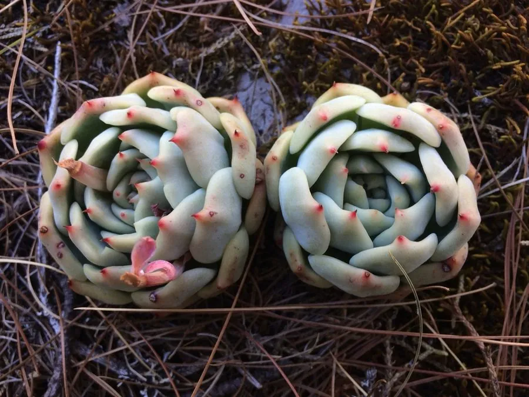

多肉植物 · 植物界
吉娃娃 Echeveria chihuahuaensis

景天科拟石莲花属小型多肉，叶片紧凑、叶尖红艳，形似小莲花，原产墨西哥奇瓦瓦州，是受欢迎的桌面盆栽。
- 分类
- 门被子植物门纲木兰纲目虎耳草目科景天科属拟石莲花属
- 栖息环境
- 墨西哥奇瓦瓦州干旱山地的岩石缝隙
- 地理分布
- 原产墨西哥奇瓦瓦州，世界各地盆栽观赏
- 保护级别
- 暂无评估
物种志
吉娃娃为景天科拟石莲花属的小型肉质草本，叶片卵形，长 2–4 厘米，先端渐尖，叶面蓝绿色，覆薄白粉，叶尖在充足光照和温差下呈鲜红色。叶片紧密排列成莲座状，直径 5–8 厘米，株型小巧紧凑。花梗自叶腋抽出，花橙色或黄色，花期春季至初夏；果实为蓇葖果。
吉娃娃原产墨西哥奇瓦瓦州的干旱山地，喜阳光充足、凉爽干燥和通风良好的环境，耐旱、忌积水，夏季高温时需适当遮阴。它株型小巧、叶尖红艳，像一朵精致的莲花，适合用小盆摆在窗台或桌面观赏。栽培用颗粒土，生长期干透浇透，给予充足光照可使叶尖更红；繁殖以叶插和分株为主，也可用花梗上的不定芽繁殖。
形态与习性
- 冠幅莲座直径 5–8 厘米
- 叶片卵形，蓝绿色，叶尖鲜红
- 花期春季至初夏，花橙色或黄色
- 光照喜充足光照，夏季遮阴
- 水分耐旱，干透浇透
- 土壤颗粒土为主，排水良好
- 繁殖叶插、分株或花梗不定芽
- 主要用途桌面小盆栽、组合盆景
趣味知识
- 吉娃娃的种加词 chihuahuaensis 来自墨西哥奇瓦瓦州。
- 叶尖的红晕在光照充足、昼夜温差大时最明显。
- 它株型小巧，直径通常不到 10 厘米，适合桌面摆放。